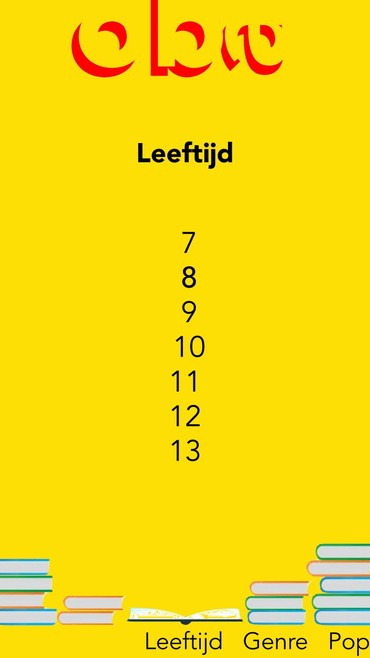

Down the rabbit hole

De informatie structuur voor een app die een overzicht geeft van de Down the rabbit hole avonden en artiesten.
Kijk verder99 verhalen

Een multidevice experience verhalen website in de huisstijl van de NS, waarvan 3 verhalen vormgegeven in een stijl die aansluit bij de tone-of-voice van het verhaal.
Kijk verderSnooze
One-pager voor het product Snooze. Snooze helpt mensen hun slaap te verbeteren doormiddel van aroma therapie.
Kijk verderOBA
Kinderen kunnen geschikte boeken vinden die zij kunnen vinden doormiddel van een filter systeem.
Kijk verder